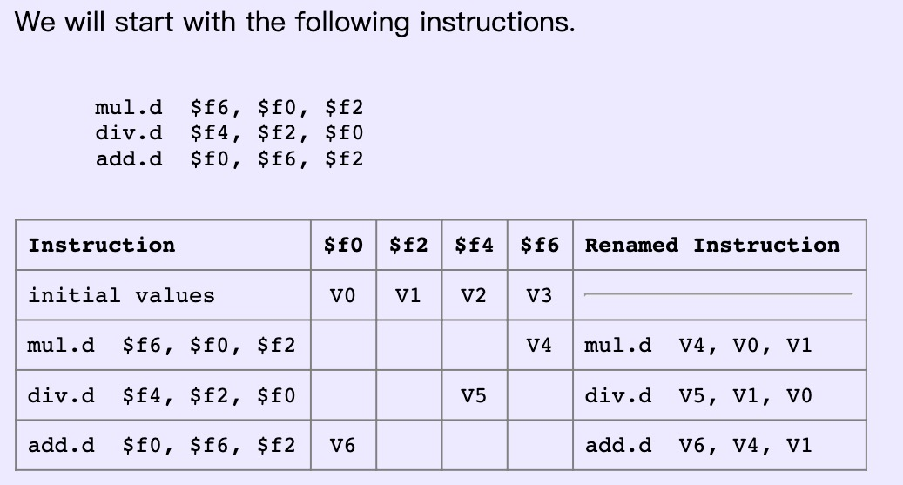
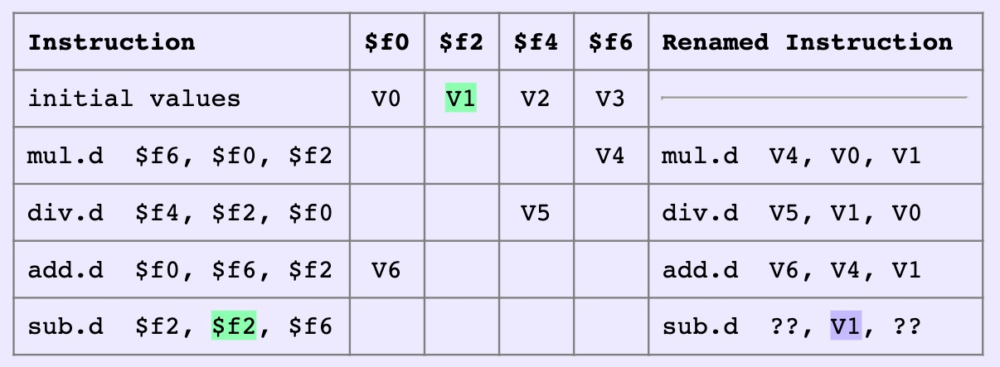
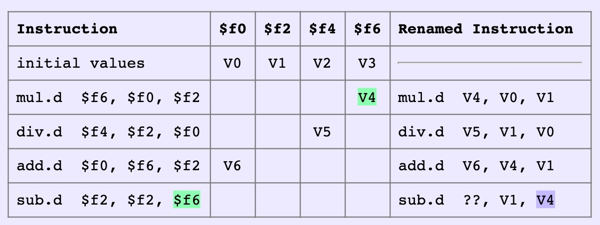
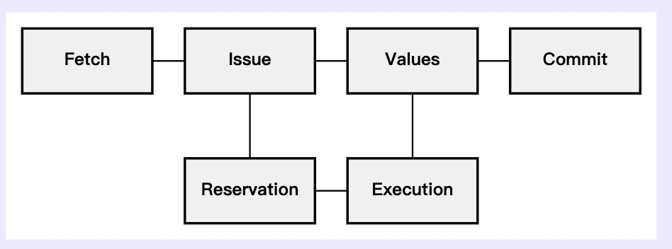
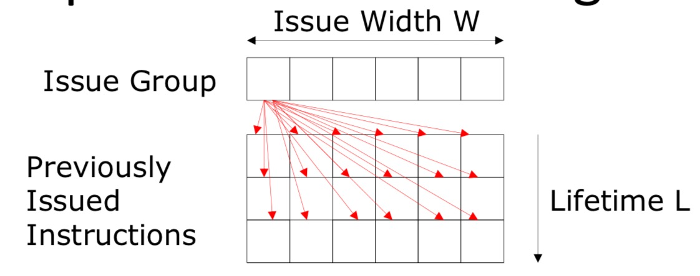

Life-Cycle of An Instruction
- Instruction Fetch: the instruction is fetched from memory or an instruction cache.
- Issue: the instruction is renamed.
- Register Fetch: The instruction waits, if necessary, in a resevation station until its source operands have valid status and a suitable functional unit is available.
- Execution: when all source operands are ready and a suitable functional unit is available the execution begins. Different operations can have different latencies.
- Write Back: when the assigned functional unit completes its execution, it writes the destination operand value to the designated value register.
- Commitment: the value register that was previously assigned to the instruction’s destination architectural register can be freed for reuse by another instruction.
Categories of Out-Of-Order
Name Frontend Issue Writeback Commit Meaning I4 IO IO IO IO .. I2O2 IO IO OOO OOO .. I2OI IO IO OOO IO .. IO3 IO OOO OOO OOO .. IO2I IO OOO OOO IO ..
Motivation of OOO
What causes independent instruction subgraph in a sequential program?
Instruction level parallelism, i.e, multiple instructions can be executed in the same cycle when there is no data dependency.
I2O2 Processors
I2OI Processors
IO3 Processors
IO2I Processors
Speculation and Register Renaming
Speculation and Branches
The Motivation of Branch Prediction
Branch penalties limit performance of deeply pipelined processors. Modern branch predictors have high accuracy(>95%) and can reduce branch penalties significantly.
Required Support of Branch Prediction
- Prediction structures: branch history tables, branch target buffers, etc.
- Mispredict recovery mechanisms:
- In-order machines: kill instructions following branch in pipeline.
- Out-of-order machines: shadow registers and memory buffers for each speculated branch.
Dynamic Branch Prediction: Learning Based on Past Behavior
- Temporal Correlation: the way a branch resolves may be a good predictor of the way it will resolve at the next execution.
- Spatial Correlation: several branches may resolve in a highly correlated manner.
WAW and WAR Name Dependency
- WAW and WAR are not true data dependencies.
- RAW is true data dependency because reader truely needs result of writer.
- WAW and WAR are name dependencies, which exist because we have limited number of names(register specifiers or memory addresses)
Register Renaming
Reference: https://www.d.umn.edu/~gshute/arch/register-renaming.xhtml
Register renaming is a form of pipeline that deal with data dependencies between instructions by renaming their register operands. An assembly language programmer or a compiler specifies these operands using architectural registers, which are registers that are explicit in the instruction set architecture. Renaming replaces architectural names by value names with a new value name for each instruction destination operand. This eliminates the name dependencies between instructions and automatically recongnized true dependencies.
A Example

Then a new instruction come in: sub.d $f2, $2, $6.
Step 1: Source Operand
Replace each source operand by the most recent value name in the designated register column: to better illustrate the process, the values that one instruction depends on are shown in light green while the remaed operand are shown in light blue.
- First replace $f2 by the most recent value name in the $f2 column.
 - Then replace $f6 by the most recent value name in the $f6 column.
Step 2: Target Operand
Replace the destination operand by a new name and place the new name in the designated register column. - Replace the $f2 destination operand by a new value name V7 and also put V7 into the column for $f2.
Benefits Brought By Renaming
With the renaming strategy, WAR and WAW, not true data dependencies, can be eliminated.
What problems exist with adding infinite number of registers to a computer instruction set architecture?
It takes up encoding space and encoding space is quite limited.
Hardware Implementation of Renaming

- Instruction Fetch: fetch instructions from memory or an instruction cache.
- Issue: rename instructions.
- Reservation: holds renamed instructions until they are ready to be executed.
- Execution: perform operations required for instructions.
- Values: manages a numbered set of value registers. The register number are used by issue circuitry for renaming operands. The value registers can also named as rename registers
- Commit: free value register that are no longer needed.
Possible ENhancements
- Speculative Execution: it involves predicting whether or not conditional branches will be taken and speculative issue of either the instruction at the branch target or the instruction following the branch, depending on the prediction.
- Super-scalar Execution: it involves issuing multiple instruction in each cycle.
- Multi-threaded Execution:
Register Renaming: Two Schemes
Register Renaming with Pointers in IQ and ROB
Register Renaming with Values in IQ and ROB
Memory Disambiguation
Give a sequence of instructions:
- st R1, 0(R2)
- ld R3, 0(R4)
In-Order Memory Queue
- Execute all loads and stores in program order, which means load and store cannot leave IQ for execution until all previous loads and stores have completed execution.
Conservative OOO Load Execution
- Split execution of store instruction into two phases: address calculation and data write.
- Can execute load before store, if addresses know and R4 != R2.
- Each load address compared with addresses of all previous uncommitted stores
- Don’t execute load if any previous store address not known
Memory Dependence Prediction
- Guess that R4 != R2 and execute load before store
- If later find that R4 == R2, squash load and all following instructions, but mark load instruction as store-wait.
- Subsequent executions of the same load instruction will wait for all previous stores to complete.
- Periodically clear store-wait bits.
VLIW: Very Long Instruction Word Processors
一些DSP可能还在用，但是通用的处理器很少采用VLIW structure.
Limits of Out-of-Order Design Complexity
Firstly, give a figure to elaborate the superscalar control logic:

We can observe that:
- Each issued instruction must somehow check against $W*L$ instructions, i.e., growth in hardware in O(WWL)
- For in-order machines, L is related to pipeline latencies and check is done during issue.
- For out-of-order machines, L also includes time spent in IQ, SB and check is done by broadcasting tags to waiting instructions at completion.
- As W increases, larger instructions window is needed to find enough parallelism to keep machine busy ==> greater L. As you go wider, your pipeline needs to get deeper.
All of these mean that out-of-order control logic grows faster than $W^2$, almost $W^3$.